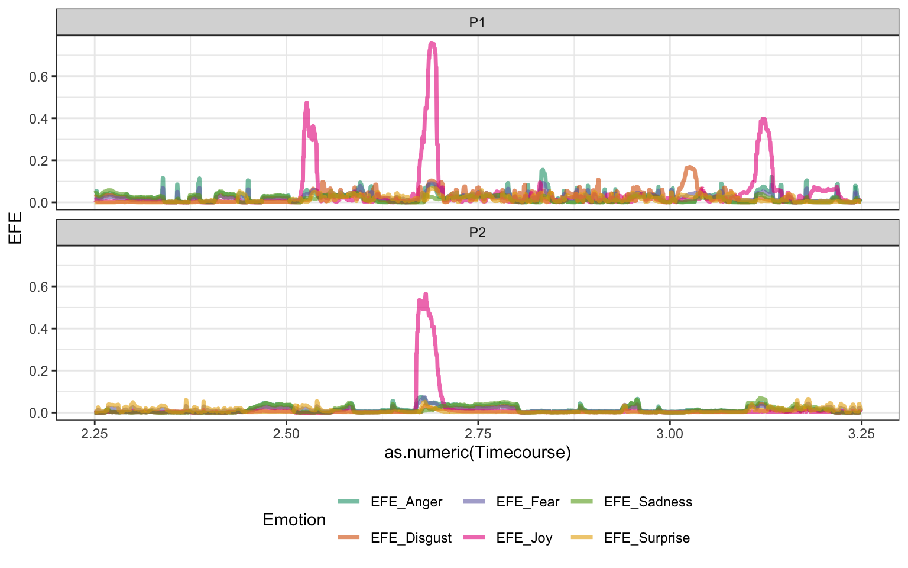
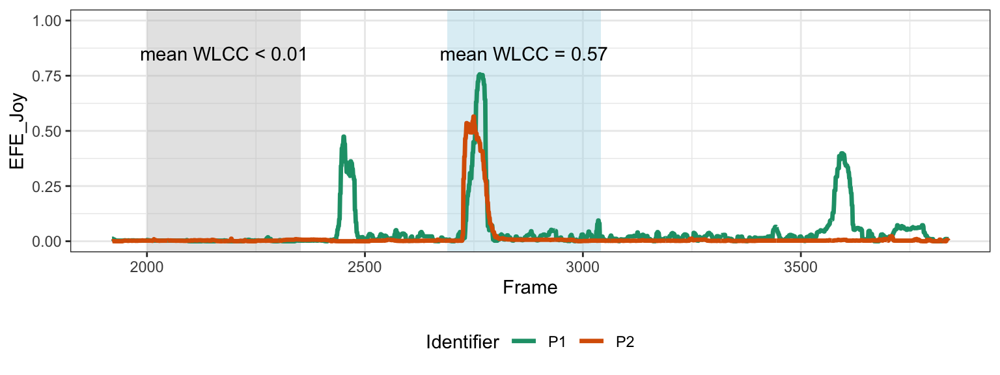
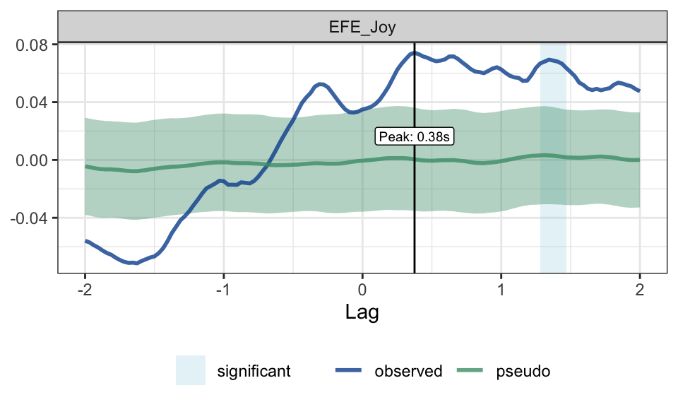
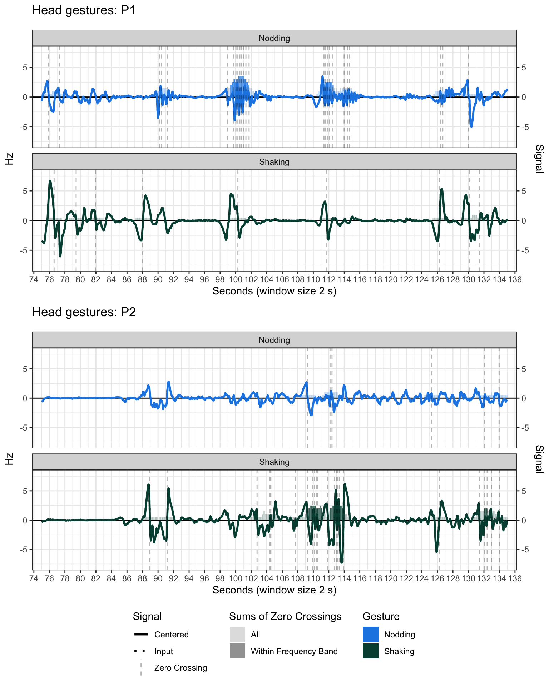
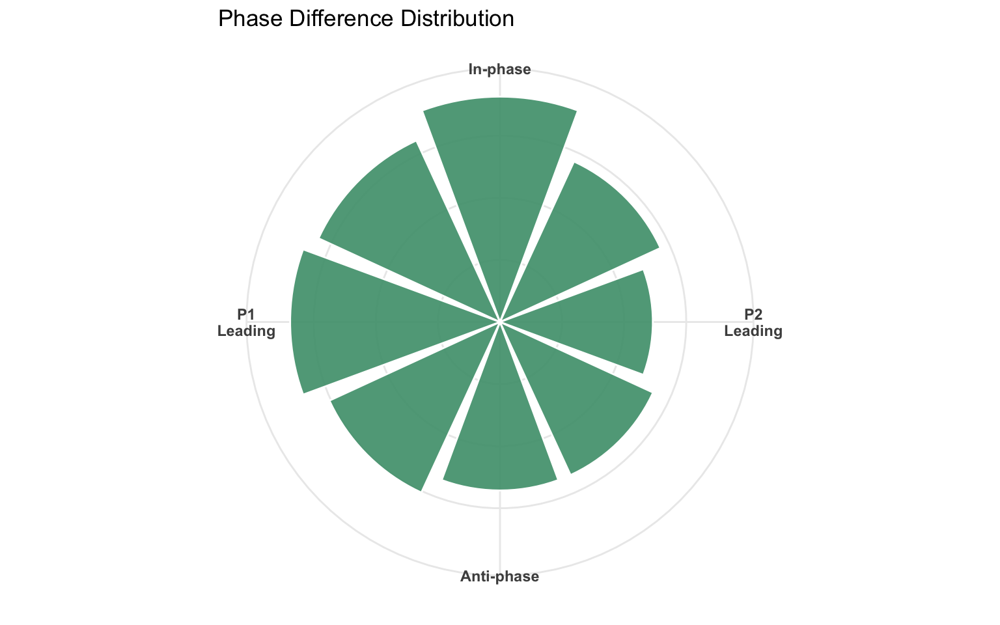
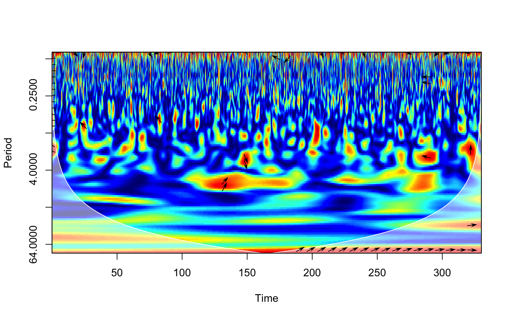
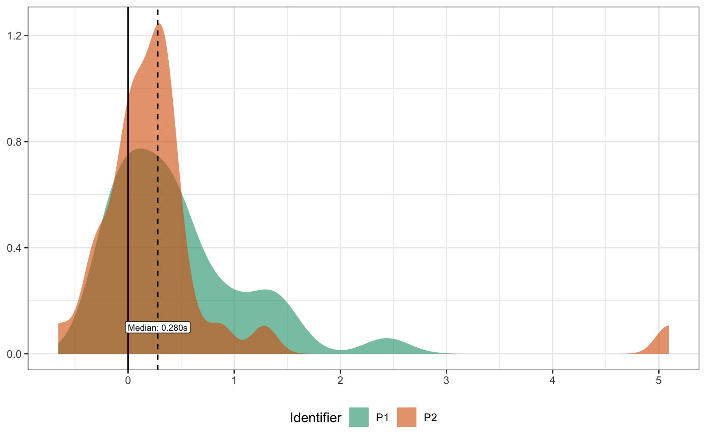

# for installation, uncomment the following:
# pak("IreneSophia/interactR")
# load interactR, which contains the preprocessing pipeline, from GitHub
library(interactR)interactR Vignette
Conversation Behaviour - Feature Extraction
1 Introduction
We used R version 4.5.2 (2025-10-31) and the following packages in the creation of this document: knitr version 1.51; dplyr version 1.2.1; ggpubr version 1.0.0; pak version 0.11.1;
All data was collected in the virtual reality environment VERSE (Rehmer et al. 2026).
The sampling rate of the data is 32. All created datafiles will be saved in _preprocessed.
2 Setup / installation
3 Extract events
We create a dataframe recording meta-data about this example interaction, including the timepoint of events of interest and VERSE settings. This part needs to be customised to the experiment. In this case, participants were having a conversation based on two slides of questions which were cast to the in-VR screens. After they finished the conversation, we created an eye-tracking visualisation. Screencasts triggered different phases of the event which are logged in the Event file:
Screen: All set to slide S1.PNG: start of the first round of questionsScreen: All set to slide S2.PNG: start of the second round of questionsScreen: All set to slide End.PNG: end of conversationScreen: All set to slide ET.PNG: start of the eye tracking visualisation
# get all of the events and info from the Event file
df.info = extractEventsVERSE(file.path(dt.path, "EventLog.txt"))
# show the events
kable(df.info)| Event | Timestamp | Version | Environment | Time | Filename | actor0 | actor1 | avatar0 | avatar1 |
|---|---|---|---|---|---|---|---|---|---|
| P1 was recentered. | 2026-08-13 13:50:33 | VERSE Version 2.0.0 TG | General/Manager Office | 2026-08-13 13:50:25 | 2026-08-13_13-50-25/TrackingDataLog.csv | P1 | P2 | 001 | 004 |
| P2 was recentered. | 2026-08-13 13:50:35 | VERSE Version 2.0.0 TG | General/Manager Office | 2026-08-13 13:50:25 | 2026-08-13_13-50-25/TrackingDataLog.csv | P1 | P2 | 001 | 004 |
| P1 is now visible. | 2026-08-13 13:50:38 | VERSE Version 2.0.0 TG | General/Manager Office | 2026-08-13 13:50:25 | 2026-08-13_13-50-25/TrackingDataLog.csv | P1 | P2 | 001 | 004 |
| P2 is now visible. | 2026-08-13 13:50:39 | VERSE Version 2.0.0 TG | General/Manager Office | 2026-08-13 13:50:25 | 2026-08-13_13-50-25/TrackingDataLog.csv | P1 | P2 | 001 | 004 |
| P1 is now visible. | 2026-08-13 13:51:40 | VERSE Version 2.0.0 TG | General/Manager Office | 2026-08-13 13:50:25 | 2026-08-13_13-50-25/TrackingDataLog.csv | P1 | P2 | 001 | 004 |
| P1 is now unmuted. | 2026-08-13 13:51:40 | VERSE Version 2.0.0 TG | General/Manager Office | 2026-08-13 13:50:25 | 2026-08-13_13-50-25/TrackingDataLog.csv | P1 | P2 | 001 | 004 |
| P2 is now visible. | 2026-08-13 13:51:40 | VERSE Version 2.0.0 TG | General/Manager Office | 2026-08-13 13:50:25 | 2026-08-13_13-50-25/TrackingDataLog.csv | P1 | P2 | 001 | 004 |
| P2 is now unmuted. | 2026-08-13 13:51:40 | VERSE Version 2.0.0 TG | General/Manager Office | 2026-08-13 13:50:25 | 2026-08-13_13-50-25/TrackingDataLog.csv | P1 | P2 | 001 | 004 |
| Experiment started | 2026-08-13 13:51:40 | VERSE Version 2.0.0 TG | General/Manager Office | 2026-08-13 13:50:25 | 2026-08-13_13-50-25/TrackingDataLog.csv | P1 | P2 | 001 | 004 |
| Screen: All set to slide S1.PNG | 2026-08-13 13:52:55 | VERSE Version 2.0.0 TG | General/Manager Office | 2026-08-13 13:50:25 | 2026-08-13_13-50-25/TrackingDataLog.csv | P1 | P2 | 001 | 004 |
| Screen: All set to slide S2.PNG | 2026-08-13 13:55:27 | VERSE Version 2.0.0 TG | General/Manager Office | 2026-08-13 13:50:25 | 2026-08-13_13-50-25/TrackingDataLog.csv | P1 | P2 | 001 | 004 |
| Screen: All set to slide End.PNG | 2026-08-13 13:58:13 | VERSE Version 2.0.0 TG | General/Manager Office | 2026-08-13 13:50:25 | 2026-08-13_13-50-25/TrackingDataLog.csv | P1 | P2 | 001 | 004 |
| Eye tracking visualization enabled. | 2026-08-13 13:58:14 | VERSE Version 2.0.0 TG | General/Manager Office | 2026-08-13 13:50:25 | 2026-08-13_13-50-25/TrackingDataLog.csv | P1 | P2 | 001 | 004 |
| Eye tracking visualization enabled. | 2026-08-13 13:58:25 | VERSE Version 2.0.0 TG | General/Manager Office | 2026-08-13 13:50:25 | 2026-08-13_13-50-25/TrackingDataLog.csv | P1 | P2 | 001 | 004 |
| Screen: All set to slide ET.PNG | 2026-08-13 13:58:25 | VERSE Version 2.0.0 TG | General/Manager Office | 2026-08-13 13:50:25 | 2026-08-13_13-50-25/TrackingDataLog.csv | P1 | P2 | 001 | 004 |
| Experiment stopped, length of experiment: 00:07:16 | 2026-08-13 13:58:56 | VERSE Version 2.0.0 TG | General/Manager Office | 2026-08-13 13:50:25 | 2026-08-13_13-50-25/TrackingDataLog.csv | P1 | P2 | 001 | 004 |
We will save the starting point of the experiment to be able to calculate onset of any Timestamp from the beginning of the experiment. This will allow us to compare the extracted features to a screen recording of the same experiment that we collected.
startExp = df.info |> filter(grepl("started", Event)) |> pull(Timestamp)4 Summary of preprocessing pipeline
In this preprocessing pipeline, the following features are extracted from dyadic interactions captured in VERSE:
- Emotional facial expressions with the emotion categorisation based on Aldenhoven et al. (2026)
- Synchrony of joy calculated using windowed-lagged cross-correlations (WLCC), based on Koehler et al. (2024)
- Head movements, specifically nodding and head shaking detected with zero crossings
- Synchrony of nodding calculated using wavelet coherence
- Speech and turn-taking features (Plank et al. 2023), once from VERSE data and once using
praat(Boersma and Weenink 2022) and the uhm-o-meter (De Jong et al. 2021) - Gaze patterns and joint attention
All observed synchrony values are compared to pseudosynchrony values. The assessment of head gestures was inspired by Hale et al. (2020).
Throughout the preprocessing, large data is saved as arrow files while aggregated data (one row per interaction partner) is saved as csv files. Columns in the csv file start with the feature group name, except for dyadic variables which are the same for both interaction partners of the same dyad and have the additional prefix Dyad.
5 General data structure
We are going to start by reading in the data from the beginning of the conversation onwards, starting with the presentation of slide S1.PNG and ending with the presentation of ET.PNG (which we will load separately later).
df.info.sel = df.info |>
filter(grepl("S1.PNG|ET.PNG", Event)) |> # focus on the Events of interest
mutate(
# let's rename our events to the column names we need to cut out the middle
Event = if_else(grepl("S1.PNG", Event), "start.use", "end.use")
) |>
# restructure to have one row with the Event as columns
tidyr::pivot_wider(names_from = Event, values_from = Timestamp)
df = extractDataVERSE(df.info.sel, # use this events Timestamp as the starting point
rs.path = rs.path, # we want the data to be saved in our results folder
return = T, # we also want to dataframe to be returned
recompute = redo) # whether to recompute if it already exists-------------- Extracting data from VERSE experiments --------------
14:32:42 : Loading VERSE experiments
14:32:43 : DoneThe resulting dataframe is quite large: 21120 rows and 203 columns! Let’s first have a look at the columns.
colnames(df) [1] "Dyad" "Time"
[3] "Identifier" "Avatar"
[5] "Frame" "Timestamp"
[7] "Duration" "Speaking"
[9] "AudioLevel" "LeftEye_Pos_X"
[11] "LeftEye_Pos_Y" "LeftEye_Pos_Z"
[13] "LeftEye_Rot_X" "LeftEye_Rot_Y"
[15] "LeftEye_Rot_Z" "LeftEye_Forward_X"
[17] "LeftEye_Forward_Y" "LeftEye_Forward_Z"
[19] "LeftEye_Targets" "RightEye_Pos_X"
[21] "RightEye_Pos_Y" "RightEye_Pos_Z"
[23] "RightEye_Rot_X" "RightEye_Rot_Y"
[25] "RightEye_Rot_Z" "RightEye_Forward_X"
[27] "RightEye_Forward_Y" "RightEye_Forward_Z"
[29] "RightEye_Targets" "Gaze_Pos_X"
[31] "Gaze_Pos_Y" "Gaze_Pos_Z"
[33] "Gaze_Rot_X" "Gaze_Rot_Y"
[35] "Gaze_Rot_Z" "GazeOffset_LeftEye_Rot_X"
[37] "GazeOffset_LeftEye_Rot_Y" "GazeOffset_LeftEye_Rot_Z"
[39] "GazeOffset_RightEye_Rot_X" "GazeOffset_RightEye_Rot_Y"
[41] "GazeOffset_RightEye_Rot_Z" "Gaze_Targets"
[43] "Facial_LeftEye_Squint" "Facial_RightEye_Squint"
[45] "Facial_LeftEye_Wide" "Facial_RightEye_Wide"
[47] "Facial_LeftEye_Blink" "Facial_RightEye_Blink"
[49] "Facial_LeftEye_LookDown" "Facial_RightEye_LookDown"
[51] "Facial_LeftEye_LookUp" "Facial_RightEye_LookUp"
[53] "Facial_LeftEye_LookIn" "Facial_RightEye_LookIn"
[55] "Facial_LeftEye_LookOut" "Facial_RightEye_LookOut"
[57] "Facial_BrowDownLeft" "Facial_BrowDownRight"
[59] "Facial_BrowInnerUp" "Facial_BrowOuterUpLeft"
[61] "Facial_BrowOuterUpRight" "Facial_JawOpen"
[63] "Facial_JawForward" "Facial_JawLeft"
[65] "Facial_JawRight" "Facial_CheekPuff"
[67] "Facial_CheekSquintLeft" "Facial_CheekSquintRight"
[69] "Facial_NoseSneerLeft" "Facial_NoseSneerRight"
[71] "Facial_MouthOpen" "Facial_MouthClose"
[73] "Facial_MouthLeft" "Facial_MouthRight"
[75] "Facial_MouthSmileLeft" "Facial_MouthSmileRight"
[77] "Facial_MouthFrownLeft" "Facial_MouthFrownRight"
[79] "Facial_MouthPressLeft" "Facial_MouthPressRight"
[81] "Facial_MouthDimpleLeft" "Facial_MouthDimpleRight"
[83] "Facial_MouthStretchLeft" "Facial_MouthStretchRight"
[85] "Facial_MouthLowerDownLeft" "Facial_MouthLowerDownRight"
[87] "Facial_MouthUpperUpLeft" "Facial_MouthUpperUpRight"
[89] "Facial_MouthShrugLower" "Facial_MouthShrugUpper"
[91] "Facial_MouthRollLower" "Facial_MouthRollUpper"
[93] "Facial_MouthFunnel" "Facial_MouthPucker"
[95] "Facial_TongueOut" "BodyX"
[97] "BodyY" "BodyZ"
[99] "BodyRotX" "BodyRotY"
[101] "BodyRotZ" "HipsX"
[103] "HipsY" "HipsZ"
[105] "HipsRotX" "HipsRotY"
[107] "HipsRotZ" "SpineX"
[109] "SpineY" "SpineZ"
[111] "SpineRotX" "SpineRotY"
[113] "SpineRotZ" "Spine1X"
[115] "Spine1Y" "Spine1Z"
[117] "Spine1RotX" "Spine1RotY"
[119] "Spine1RotZ" "Spine2X"
[121] "Spine2Y" "Spine2Z"
[123] "Spine2RotX" "Spine2RotY"
[125] "Spine2RotZ" "NeckX"
[127] "NeckY" "NeckZ"
[129] "NeckRotX" "NeckRotY"
[131] "NeckRotZ" "HeadX"
[133] "HeadY" "HeadZ"
[135] "HeadRotX" "HeadRotY"
[137] "HeadRotZ" "HeadCenterX"
[139] "HeadCenterY" "HeadCenterZ"
[141] "HeadCenterRotX" "HeadCenterRotY"
[143] "HeadCenterRotZ" "LeftShoulderX"
[145] "LeftShoulderY" "LeftShoulderZ"
[147] "LeftShoulderRotX" "LeftShoulderRotY"
[149] "LeftShoulderRotZ" "LeftArmX"
[151] "LeftArmY" "LeftArmZ"
[153] "LeftArmRotX" "LeftArmRotY"
[155] "LeftArmRotZ" "LeftForeArmX"
[157] "LeftForeArmY" "LeftForeArmZ"
[159] "LeftForeArmRotX" "LeftForeArmRotY"
[161] "LeftForeArmRotZ" "LeftHandX"
[163] "LeftHandY" "LeftHandZ"
[165] "LeftHandRotX" "LeftHandRotY"
[167] "LeftHandRotZ" "RightShoulderX"
[169] "RightShoulderY" "RightShoulderZ"
[171] "RightShoulderRotX" "RightShoulderRotY"
[173] "RightShoulderRotZ" "RightArmX"
[175] "RightArmY" "RightArmZ"
[177] "RightArmRotX" "RightArmRotY"
[179] "RightArmRotZ" "RightForeArmX"
[181] "RightForeArmY" "RightForeArmZ"
[183] "RightForeArmRotX" "RightForeArmRotY"
[185] "RightForeArmRotZ" "RightHandX"
[187] "RightHandY" "RightHandZ"
[189] "RightHandRotX" "RightHandRotY"
[191] "RightHandRotZ" "Partner"
[193] "Listening" "Actor"
[195] "Communication" "Version"
[197] "Environment" "actor0"
[199] "actor1" "Size"
[201] "AOI.gaze" "AOI.left"
[203] "AOI.right" The columns Dyad and Time specify the unique VERSE experiment. The column Identifier captures the interaction partner. There are columns that capture audio (e.g., Speaking), gaze (e.g., LeftEye_Pos_X), movement (e.g., HeadX) and facial expressions (all columns starting with Facial_). The dataframe also contains all the information that was present in the df.info in which we captured the events.
kable(head(
df |> select(Dyad, Time, Identifier, Frame, Avatar) |>
arrange(Frame)
))| Dyad | Time | Identifier | Frame | Avatar |
|---|---|---|---|---|
| P1-P2 | 2026-08-13 13:50:25 | P1 | 1 | 001 |
| P1-P2 | 2026-08-13 13:50:25 | P2 | 1 | 004 |
| P1-P2 | 2026-08-13 13:50:25 | P1 | 2 | 001 |
| P1-P2 | 2026-08-13 13:50:25 | P2 | 2 | 004 |
| P1-P2 | 2026-08-13 13:50:25 | P1 | 3 | 001 |
| P1-P2 | 2026-08-13 13:50:25 | P2 | 3 | 004 |
When we print the first few rows of the columns describing the interaction partners and the experiment session, we can see that the data is in a mix of wide and long format - each Identifier’s data has its own rows but all the different tracked data is captured in columns.
6 Emotional facial expressions
First, we are interested in the facial expressions. We want to extract both aggregated facial expressions associated with emotions and also plot the timecourse of these expressions across the conversation. We can prepare the data with the featEFE function. While we could provide our own categorisation of which facial expressions should be captured in which emotional expression, we will use the precoded categorisation based on Aldenhoven et al. (2026).
We are also going to use the rescaleVERSE switch: VERSE combines several weighted blendshapes into facial expressions, sometimes resulting in a maximum above 1. Rescaling results in each facial expression being tracked on a scale from 0 to 1.
# use the function
df.efe = featEFE(df, # dataframe with tracked VERSE data
rescaleVERSE = T,
rs.path = rs.path, # path to the results folder
return = T, # return the aggregated summary
recompute = redo) # whether to recompute if it already exists--------- Extracting emotional facial expressions features ---------
14:32:43 : Loading aggregated facial expressions
14:32:43 : Donekable(df.efe)| Dyad | Identifier | Time | Partner | EFE_Anger_Total | EFE_Disgust_Total | EFE_Joy_Total | EFE_Fear_Total | EFE_Sadness_Total | EFE_Surprise_Total | EFE_FEX_Total | EFE_Anger_Listening | EFE_Anger_Silence | EFE_Anger_Speaking | EFE_Disgust_Listening | EFE_Disgust_Silence | EFE_Disgust_Speaking | EFE_Joy_Listening | EFE_Joy_Silence | EFE_Joy_Speaking | EFE_Fear_Listening | EFE_Fear_Silence | EFE_Fear_Speaking | EFE_Sadness_Listening | EFE_Sadness_Silence | EFE_Sadness_Speaking | EFE_Surprise_Listening | EFE_Surprise_Silence | EFE_Surprise_Speaking | EFE_FEX_Listening | EFE_FEX_Silence | EFE_FEX_Speaking |
|---|---|---|---|---|---|---|---|---|---|---|---|---|---|---|---|---|---|---|---|---|---|---|---|---|---|---|---|---|---|---|---|
| P1-P2 | P1 | 2026-08-13 13:50:25 | P2 | 0.0203358 | 0.0211403 | 0.0265747 | 0.0196029 | 0.0124534 | 0.0138364 | 0.0189906 | 0.0146949 | 0.0238028 | 0.0212137 | 0.0099129 | 0.0199476 | 0.0307025 | 0.0173057 | 0.0300327 | 0.0301792 | 0.0117658 | 0.0207025 | 0.0244119 | 0.0099494 | 0.0141168 | 0.0127231 | 0.0056144 | 0.0135800 | 0.0202430 | 0.0115405 | 0.0203637 | 0.0232455 |
| P1-P2 | P2 | 2026-08-13 13:50:25 | P1 | 0.0151645 | 0.0108309 | 0.0104455 | 0.0156998 | 0.0179696 | 0.0134654 | 0.0139293 | 0.0192076 | 0.0181098 | 0.0102871 | 0.0135060 | 0.0127047 | 0.0076690 | 0.0077706 | 0.0101078 | 0.0122729 | 0.0141399 | 0.0165531 | 0.0158533 | 0.0222743 | 0.0214590 | 0.0124696 | 0.0057831 | 0.0118019 | 0.0193165 | 0.0137803 | 0.0151227 | 0.0129781 |
The aggregated dataframe captures the average emotional facial expressions and the overall facial expressiveness FEX, in total but also separately for different Communication events - speaking, listening and silence. This wasn’t a very emotional conversation, so we don’t expect high values here. Let’s have a look at the timecourse data that was automatically saved in our results folder.
df.face = arrow::read_feather(file.path(rs.path, "dataEFE.arrow")) |>
mutate(
Timecourse = difftime(Timestamp, startExp, units = "min")
)
We can see that there is bursts of Joy expression, for instance around the 2 minute 40 second mark. This small period is also observable in the screen captures.
7 Interpersonal synchrony of joy
In the above example, P1 was smiling before P2 started smiling. This sort of adaptation of facial expressions is something we can capture using interpersonal synchrony (IPS) calculated with windowed-lagged cross-correlation (WLCC). In this technique, we are sliding windows along our time course and shifting them for one interaction partner before correlating the values. Thus, the correlation captures the association between the timecourse data of both interaction partners in these windows, either simultaneously or with one partner “leading” the other, i.e. their behaviour happening first.
We can calculate the WLCC of Joy using the extractIPS function.
df.wlcc = extractIPS(df.face,
"EFE_Joy", # column for which IPS is extracted
"WLCC", # type of IPS
fps, # frame rate of the data
seed = 4480, # setting a seed for reproducibility
rs.path = rs.path, # results folder
winSample = fps * 7, # size of the window in samples - 7 seconds
incSample = fps / 2, # size of the increment for sliding in samples
lagSample = fps * 2, # size of the lag, i.e., shifting one partner's data in samples
recompute = redo) # whether to recompute if it already exists---------------------- Extract IPS using WLCC ----------------------
14:32:43 : Loading WLCC features
14:32:43 : Donekable(head(df.wlcc))| Lag | WLCC | Window | startFrame | endFrame | Leading | Dyad | Method | Feature | Time | seed | iteration |
|---|---|---|---|---|---|---|---|---|---|---|---|
| -2.00000 | -0.1391142 | w1 | 1 | 353 | Right | P1-P2 | observed | EFE_Joy | 2026-08-13 13:50:25 | 4480 | 1 |
| -1.96875 | -0.1578093 | w1 | 1 | 353 | Right | P1-P2 | observed | EFE_Joy | 2026-08-13 13:50:25 | 4480 | 1 |
| -1.93750 | -0.1865997 | w1 | 1 | 353 | Right | P1-P2 | observed | EFE_Joy | 2026-08-13 13:50:25 | 4480 | 1 |
| -1.90625 | -0.2118793 | w1 | 1 | 353 | Right | P1-P2 | observed | EFE_Joy | 2026-08-13 13:50:25 | 4480 | 1 |
| -1.87500 | -0.2493965 | w1 | 1 | 353 | Right | P1-P2 | observed | EFE_Joy | 2026-08-13 13:50:25 | 4480 | 1 |
| -1.84375 | -0.2889060 | w1 | 1 | 353 | Right | P1-P2 | observed | EFE_Joy | 2026-08-13 13:50:25 | 4480 | 1 |
The resulting dataframe contains the WLCC values for each lag and window, while also capturing other information for instance what the lag means in the column Leading, the seed that was used and which iteration this data comes from. Those last two columns are not relevant when we compute real, observed IPS as also captured in column Method, but will become relevant later.
Let’s now visualise the same part of the conversation as above but focusing on Joy. We highlight one window with a high and one window with a low average WLCC value across lags.

We can aggregate the WLCC values using featWLCC.
df.wlcc.agg = featWLCC(df.wlcc,
absolute = F, # we want to keep the signed values
r2z = F, # stick with correlation coefficients
rs.path = rs.path,
recompute = redo)-------------- Extracting IPS features based on WLCC --------------
14:32:44 : Loading WLCC feature dataframe14:32:44 : Donekable(df.wlcc.agg)| Dyad | Time | Identifier | Method | WLCC_EFE_Joy_AVG | WLCC_EFE_Joy_MED | WLCC_EFE_Joy_STD | DyadWLCC_EFE_Joy_AVG | DyadWLCC_EFE_Joy_MED | DyadWLCC_EFE_Joy_STD | DyadWLCC_EFE_Joy_PEAK | WLCC_EFE_Joy_PEAK |
|---|---|---|---|---|---|---|---|---|---|---|---|
| P1-P2 | 2026-08-13 13:50:25 | P1 | observed | 0.0593318 | 0.0401019 | 0.2471295 | 0.02121 | -0.0005476 | 0.255111 | 0.3757539 | 0.2995934 |
| P1-P2 | 2026-08-13 13:50:25 | P2 | observed | -0.0171267 | -0.0447488 | 0.2566806 | 0.02121 | -0.0005476 | 0.255111 | 0.3757539 | 0.2568312 |
The dataframe contains leading of each interaction partner, prefix = WLCC, as well as overall IPS values across all lags with prefix DyadWLCC. For each value, the data was aggregated using the grand mean, median, standard deviation as well as the mean of the peak, i.e. maximum value, of each window. While P1 was more likely to lead a joyful expression, the peak is more similar across both interaction partners, suggesting that if P2 was leading a joyful expression it was with a similar association as P1, but they did so less often.
7.1 Comparison with pseudo IPS
We might be interested in whether the correlations are just artefacts or meaningful adaptation by our interaction partners. To assess this, we can compute pseudo IPS by shuffling either the dyads or the timecourse data of one interaction partner in segments. Since we only have one dyad in our example dataset, we will use segment shuffling and then compare the lag values using permutation testing.
To create pseudo IPS, we can use the same function as before but not set the number of segment shuffling to 200. Depending on your computer, this may take a few minutes. On a MacBook Air with an M4, shuffling 400 times took about 6min.
df.pwlcc = extractIPS(df.face,
"EFE_Joy", # column for which IPS is extracted
"WLCC", # type of IPS
fps, # frame rate of the data
seed = 4480, # setting a seed for reproducibility
rs.path = rs.path, # results folder
nSegment = 400, # shuffle the segments 200 times per dyad
winSample = fps * 7, # size of the window in samples - 7 seconds
incSample = fps / 2, # size of the increment for sliding in samples
lagSample = fps * 2, # size of the lag, i.e., shifting one partner's data in samples
recompute = redo) # whether to recompute if it already exists---------------------- Extract IPS using WLCC ----------------------
14:32:44 : Loading WLCC features
14:32:45 : Donekable(head(df.pwlcc))| Lag | WLCC | Window | startFrame | endFrame | Leading | Dyad | Method | Feature | Time | seed | iteration |
|---|---|---|---|---|---|---|---|---|---|---|---|
| -2.00000 | 0.3522574 | w1 | 1 | 353 | Right | P1-P2 | pseudoSegment | EFE_Joy | 2026-08-13 13:50:25 | 4480 | 1 |
| -1.96875 | 0.3393082 | w1 | 1 | 353 | Right | P1-P2 | pseudoSegment | EFE_Joy | 2026-08-13 13:50:25 | 4480 | 1 |
| -1.93750 | 0.3322341 | w1 | 1 | 353 | Right | P1-P2 | pseudoSegment | EFE_Joy | 2026-08-13 13:50:25 | 4480 | 1 |
| -1.90625 | 0.3187459 | w1 | 1 | 353 | Right | P1-P2 | pseudoSegment | EFE_Joy | 2026-08-13 13:50:25 | 4480 | 1 |
| -1.87500 | 0.3105994 | w1 | 1 | 353 | Right | P1-P2 | pseudoSegment | EFE_Joy | 2026-08-13 13:50:25 | 4480 | 1 |
| -1.84375 | 0.2973979 | w1 | 1 | 353 | Right | P1-P2 | pseudoSegment | EFE_Joy | 2026-08-13 13:50:25 | 4480 | 1 |
The resulting dataframe looks exactly the same as the df.wlcc from before, but the Method value is pseudoSegment. Let’s compare whether there is a difference between observed and pseudo IPS of Joy using the function compareIPS. While we could do this by ignoring the sign and taking the absolute value of IPS, we want to actually be able to distinguish whether interaction partners react to each other with a similar or the opposite behaviour.
df.comp = compareIPS(rbind(df.wlcc, df.pwlcc), # bind the two dataframes together as input
perm = T, # we use permutation testing instead of t-tests
alpha = 0.05,
rs.path = rs.path,
recompute = redo)---------------- Comparing pseudo and observed IPS ----------------
14:32:58 : Loading IPS comparison
14:32:58 : Donekable(head(df.comp))| Lag | Method | Feature | STD | AVG | Probability | Direction | Evaluation |
|---|---|---|---|---|---|---|---|
| -2.00000 | observed | EFE_Joy | NA | -0.0558606 | 0.925 | lesser | NA |
| -2.00000 | pseudoSegment | EFE_Joy | 0.0335906 | -0.0043560 | 0.925 | lesser | NA |
| -1.96875 | observed | EFE_Joy | NA | -0.0570278 | 0.930 | lesser | NA |
| -1.96875 | pseudoSegment | EFE_Joy | 0.0335710 | -0.0049389 | 0.930 | lesser | NA |
| -1.93750 | observed | EFE_Joy | NA | -0.0589565 | 0.945 | lesser | NA |
| -1.93750 | pseudoSegment | EFE_Joy | 0.0336244 | -0.0055922 | 0.945 | lesser | NA |
The resulting dataframe contains one row per lag. For each lag, we get the average and standard deviation across the windows, the probability of a difference, the Direction (greater or lesser) and Evaluation which is * if the probability exceeded our alpha.
We can plot these results with plotWLCCcomp.
plotWLCCcomp(df.comp, ncol = 1)
This plot shows that observed IPS differed significantly from pseudo IPS only for a small block of the positive lags. Specifically, observed IPS exceeds pseudo IPS when P1 was leading, suggesting that P2 reacted to P1’s joyful expressions with a more joyful expression as well. This corresponds to what we saw above when plotting the timecourse of joyful expressions as well.
8 Head shaking and nodding
Now, we want to use a Z-crossing algorithm inspired by Hale et al. (2020) to detect head shaking and nodding during our conversation. First, we need to preprocess our head movement data: decentring the data and removing artificial phase-wrapping jumps (e.g., flipping between -180 and +180 or 0 and 360 degrees) from rotational values
df.head = preproHead(df,
c("HeadCenterRotX", "HeadCenterRotY"), # names of the translational columns
c("HeadCenterX", "HeadCenterY"), # names of the rotational columns
rs.path = rs.path,
return = T,
recompute = redo)---- Preprocessing translational and rotational head movements ----
14:32:58 : Loading preprocessed head movement data
14:32:58 : Donekable(head(df.head))| Dyad | Identifier | Frame | Timestamp | Time | Communication | HeadCenterRotX | HeadCenterRotY | HeadCenterX | HeadCenterY | HeadCenterRotX_fixCirc | HeadCenterRotY_fixCirc | HeadCenterX_detrended | HeadCenterY_detrended | HeadCenterRotX_fixCirc_detrended | HeadCenterRotY_fixCirc_detrended |
|---|---|---|---|---|---|---|---|---|---|---|---|---|---|---|---|
| P1-P2 | P1 | 1 | 2026-08-13 13:52:55 | 2026-08-13 13:50:25 | Speaking | 6.973387 | 66.17638 | -0.7413241 | 1.228718 | 6.973387 | 66.17638 | 0.0184247 | -0.0110894 | 6.486957 | -12.98640 |
| P1-P2 | P1 | 2 | 2026-08-13 13:52:55 | 2026-08-13 13:50:25 | Speaking | 7.123644 | 66.32227 | -0.7405155 | 1.228510 | 7.123644 | 66.32227 | 0.0192333 | -0.0112974 | 6.637214 | -12.84051 |
| P1-P2 | P1 | 3 | 2026-08-13 13:52:55 | 2026-08-13 13:50:25 | Speaking | 7.268878 | 66.48013 | -0.7397080 | 1.228319 | 7.268878 | 66.48013 | 0.0200408 | -0.0114884 | 6.782448 | -12.68265 |
| P1-P2 | P1 | 4 | 2026-08-13 13:52:55 | 2026-08-13 13:50:25 | Speaking | 7.431265 | 66.64230 | -0.7393608 | 1.228102 | 7.431265 | 66.64230 | 0.0203880 | -0.0117054 | 6.944835 | -12.52048 |
| P1-P2 | P1 | 5 | 2026-08-13 13:52:55 | 2026-08-13 13:50:25 | Speaking | 7.605822 | 66.81541 | -0.7390162 | 1.227868 | 7.605822 | 66.81541 | 0.0207326 | -0.0119394 | 7.119392 | -12.34737 |
| P1-P2 | P1 | 6 | 2026-08-13 13:52:55 | 2026-08-13 13:50:25 | Speaking | 7.674880 | 66.93049 | -0.7389467 | 1.227769 | 7.674880 | 66.93049 | 0.0208021 | -0.0120384 | 7.188450 | -12.23229 |
This function saved a new data file, containing only the relevant head movement data and some general information, i.e. Communication. We can use this dataframe to detect head gestures (nodding and shaking) using featHeadGestures. Here, we are using a minimum framewise degree of movement and filter anything below it. This threshold depends on your setup and your frame rate. To determine it, it can be helpful to create example data, screen capture your movements and compare the results of different thresholds. There are also quite a few additional settings that you can test, as described below in the comments.
df.gesture = featHeadGestures(df.head,
"HeadCenterRotX_fixCirc_detrended", # column for nodding
"HeadCenterRotY_fixCirc_detrended", # column for shaking
fps,
0.4, # minimum framewise degree of movement
win = 2, # consider windows of length 2 seconds
minFreq = 1.5, # focus on movements with at least 1.5Hz
maxFreq = 6.5, # and below 6.5Hz
winCentre = NULL, # use win for the window size of the centring
winSmooth = 0, # do not use any smoothing
rs.path = rs.path,
return = T,
recompute = redo)--------------------- Extracting head gestures ---------------------
14:32:58 : Loading Head Gesture features
14:32:58 : Donekable(head(df.gesture |> select(Identifier, Frame, !any_of(colnames(df.head)))))| Identifier | Frame | Nodding | Shaking | Nodding_zc | Nodding_zcT | Nodding_diff | Nodding_sum | Nodding_rel | Shaking_zc | Shaking_zcT | Shaking_diff | Shaking_sum | Shaking_rel |
|---|---|---|---|---|---|---|---|---|---|---|---|---|---|
| P1 | 1 | -0.6714676 | -3.411912 | 0 | FALSE | 0.0000000 | 0.5 | FALSE | 0 | FALSE | 0.0000000 | 0 | FALSE |
| P1 | 2 | -0.4400393 | -3.468037 | 0 | FALSE | 0.2314283 | 0.5 | FALSE | 0 | FALSE | 0.0561248 | 0 | FALSE |
| P1 | 3 | -0.2140778 | -3.508229 | 1 | FALSE | 0.2259615 | 0.5 | FALSE | 0 | FALSE | 0.0401924 | 0 | FALSE |
| P1 | 4 | 0.0280063 | -3.539563 | 0 | FALSE | 0.2420841 | 0.5 | FALSE | 0 | FALSE | 0.0313337 | 0 | FALSE |
| P1 | 5 | 0.2817038 | -3.547681 | 0 | FALSE | 0.2536975 | 0.5 | FALSE | 0 | FALSE | 0.0081174 | 0 | FALSE |
| P1 | 6 | 0.4294374 | -3.601528 | 0 | FALSE | 0.1477336 | 0.5 | FALSE | 0 | FALSE | 0.0538473 | 0 | FALSE |
This table focuses on the newly created column. Nodding and Shaking contain the preprocessed signal and diff columns the framewise change in degree, while columns ending in zc track the Zero-crossings. All Zero-crossings above the minimum framewise degree of movement are summed up with a sliding 2-second window, which is captured in the columns ending in sum. These sums are only considered relevant head gestures, as captured in the columns ending in rel, when they are within the defined frequency range. If head shaking and nodding is detected at the same time, only the gesture that is associated with the larger movement is considered relevant.
We can now plot the head gestures across time to see where some nodding or head shaking was detected. For this, we can use the plotting function plotHeadGestures which plots one Identifier at a time.
minFrame = 1
p1 = plotHeadGestures(df.head |> filter(Identifier == "P1") |>
mutate(# adding the timecourse to ease comparison with the screen capture
Timecourse = difftime(Timestamp, startExp, units = "secs")
),
"HeadCenterRotX_fixCirc_detrended", # column for nodding
"HeadCenterRotY_fixCirc_detrended", # column for shaking
fps,
0.4, # minimum framewise degree of movement
minFrame = minFrame, # where to start plotting
maxFrame = minFrame + 60*fps, # where to end plotting
win = 2, # consider windows of length 2 seconds
minFreq = 1.5, # focus on movements with at least 1.5Hz
maxFreq = 6.5, # and below 6.5Hz
winCentre = NULL, # use win for the window size of the centring
winSmooth = 0, # do not use any smoothing
legend = F # no legend
)
p2 = plotHeadGestures(df.head |> filter(Identifier == "P2") |>
mutate( # adding the timecourse to ease comparison with the screen capture
Timecourse = difftime(Timestamp, startExp, units = "secs")
),
"HeadCenterRotX_fixCirc_detrended", # column for nodding
"HeadCenterRotY_fixCirc_detrended", # column for shaking
fps,
0.4, # minimum framewise degree of movement
minFrame = minFrame, # where to start plotting
maxFrame = minFrame + 60*fps, # where to end plotting
win = 2, # consider windows of length 2 seconds
minFreq = 1.5, # focus on movements with at least 1.5Hz
maxFreq = 6.5, # and below 6.5Hz
winCentre = NULL, # use win for the window size of the centring
winSmooth = 0 # do not use any smoothing
)
ggarrange(p1, p2, nrow = 2, heights = c(0.44, 0.56))
Z-crossings with framewise head movement above the threshold are shown with vertical dashed lines. The solid lines show the preprocessed signal. The columns are the sums of the Z-crossings above the framewise movement threshold, with darker colours for sums within the frequency range. For each interaction partner, nodding and head shaking is plotted separately. We can see that at the almost 2min mark, both interaction partners are using head gestures, with P1 nodding and P2 shaking their head. Again, we can see this nicely in the screen capture.
9 Interpersonal synchrony of nodding
We might also be interested in how aligned people are in their head gestures, specifically nodding. Since these are rhythmic movements, instead of using correlations, we can use wavelet coherence (WTC) which considers both the time and the frequency space. For this, we will use the biwavelet package inside our extractIPS function.
df.wtc = extractIPS(df.head,
"HeadCenterRotX_fixCirc_detrended", # we use this preprocessed column for the IPS
"WTC", # instead of WLCC, we want to extract WTC now
fps,
featname = "HeadNodding", # since the column name is so long, we rename it
rs.path = rs.path,
seed = 8242,
recompute = redo)---------------------- Extract IPS using WTC ----------------------
14:33:00 : Loading WTC features
14:33:00 : Donekable(head(df.wtc))| Period | Rsq | Phase | Timecourse | COI | Frame | Frequency | WithinCOI | Dyad | pseudoDyad | Method | Feature | Time | seed | iteration |
|---|---|---|---|---|---|---|---|---|---|---|---|---|---|---|
| 0.0487098 | 0.5418934 | -0.2267537 | 0.12500 | 0.0516645 | 1000 | 20.52976 | TRUE | P1-P2 | FALSE | observed | HeadNodding | 2026-08-13 13:50:25 | 8242 | 1 |
| 0.0516062 | 0.2989287 | -0.1374591 | 0.12500 | 0.0516645 | 1000 | 19.37752 | TRUE | P1-P2 | FALSE | observed | HeadNodding | 2026-08-13 13:50:25 | 8242 | 1 |
| 0.0487098 | 0.4870407 | 2.3859798 | 0.15625 | 0.0688860 | 10000 | 20.52976 | TRUE | P1-P2 | FALSE | observed | HeadNodding | 2026-08-13 13:50:25 | 8242 | 1 |
| 0.0516062 | 0.2830789 | 2.2653838 | 0.15625 | 0.0688860 | 10000 | 19.37752 | TRUE | P1-P2 | FALSE | observed | HeadNodding | 2026-08-13 13:50:25 | 8242 | 1 |
| 0.0546749 | 0.1061439 | 2.0787004 | 0.15625 | 0.0688860 | 10000 | 18.28994 | TRUE | P1-P2 | FALSE | observed | HeadNodding | 2026-08-13 13:50:25 | 8242 | 1 |
| 0.0579260 | 0.0183793 | 1.7697311 | 0.15625 | 0.0688860 | 10000 | 17.26340 | TRUE | P1-P2 | FALSE | observed | HeadNodding | 2026-08-13 13:50:25 | 8242 | 1 |
The resulting dataframe is similar to the WLCC IPS dataframe, but differs in many columns as well. The columns Frequency and Period track the frequency domain, while Timecourse captures the time domain. COI gives us the threshold for the cone of influence and WithinCOI tracks whether this datapoint is within this cone of influence. Rsq captures the coherence, which is similar to a correlation coefficient and captures the strength of the similarity. Phase captures whether the relationship is in-phase, anti-phase or driven by one interaction partner leading the other.
Let’s start with plotting the phase distribution with the function plotPhaseRose.
plotPhaseRose(df.wtc)
The plot shows that P1 was leading more often and that in-phase coherence was more common than anti-phase coherence. We can also load the biwavelet object of the dyad that was automatically saved in the results folder and use the plotting function from the biwavelet package to investigate this further.
wtc = readRDS(file.path(rs.path, "dataWTC_HeadNodding_P1-P2_seed-8242.rds"))
biwavelet::plot.biwavelet(wtc, plot.phase = T)
For some information on how to read this plots, you can check out this tutorial: https://rpubs.com/ibn_abdullah/rwcoher
For IPS based on WTC, we could again use the same functions to create and compare pseudo IPS. However, shuffling segments does not make sense when we are assessing rhythmic behaviour. Dyad shuffling would be preferable, since it preserves the rhythmic nature of the head movements. Since we only have one dyad, we will skip the comparison with pseudo IPS for this vignette.
10 Speech and turn-taking features
10.1 VERSE tracked data
If we don’t have any audio recordings, we can extract some speech and turn-taking features based on the sound that was detected by VERSE and included in the tracked data log. We use the function featSpeech without setting the praat.path.
df.speechV = featSpeech(df,
praat.path = c(),
praat.prefix = c(),
rs.path = rs.path,
return = T,
recompute = redo) -------------------- Extracting speech features --------------------
14:33:07 : Loading speech features
14:33:07 : Donekable(head(df.speechV))| Dyad | Identifier | SPCH_TurnGapsMedian | SPCH_TurnGapsSD | DyadSPCH_nTurns | SPCH_PhonationDuration | DyadSPCH_SilenceToTurn | SPCH_PhonationBalance |
|---|---|---|---|---|---|---|---|
| P1-P2 | P1 | 0.3275000 | 0.6198723 | 66 | 114.027 | 0.3584659 | 0.8848082 |
| P1-P2 | P2 | 0.2179999 | 2.7139185 | 66 | 128.872 | 0.3584659 | 1.1301885 |
Again, dyadic features in the resulting feature dataframe start with Dyad, while individual ones start with SPCH. Based on the VERSE data alone, we can extract the number of turns (DyadSPCH_noTurns), the median and standard deviation of turn-taking gaps (SPCH_TurnGapsMedian, SPCH_TurnGapsSD). We also get the time each interaction partner was speaking with SPCH_PhonationDuration, as well as the silence-to-turn ratio capturing how much speech versus silence the conversation had (DyadSPCH_SilenceToTurn) and the SPCH_PhonationBalance which captures who was speaking more. If both interaction partners were speaking a similar amount of the time, then the phonation balance would be 1 for both of them.
The function also saved a file to the results folder that contains all turns that were detected. We can also plot their distribution.
df.turns = arrow::read_feather(file.path(rs.path, "dataTurn.arrow")) |>
filter(!is.na(TTG) & abs(TTG) < 6)
df.turns |> tidyr::drop_na() |>
ggplot(aes(x = TTG, fill = Identifier)) +
geom_density(alpha = 0.6, colour = NA) +
geom_vline(xintercept = 0) +
geom_vline(xintercept = median(df.turns$TTG), linetype = "dashed") +
geom_label(data = data.frame(xpos = median(df.turns$TTG), ypos = 0.1), size = 2.5,
aes(x = xpos, y = ypos,
label = sprintf("Median: %.3fs", median(df.turns$TTG))), fill = "white") +
theme_bw() +
scale_fill_brewer(palette = "Dark2") +
theme(legend.position = "bottom",
axis.title.x = element_blank(),
axis.title.y = element_blank())
We see that gaps between turns were sometimes negative, indicating that P1 and P2’s speech was overlapping, a similar finding to previous studies. Before plotting, we filtered any extrem (more than 6 seconds) gaps in either direction.
10.2 praat output
We can now also do the same, but based on the information extracted with the praat script. Here, we will only process a small part of the conversation which we will share similarly to the screen capture. Running the praat script created four files:
Recording_Participant_P1-cut.TextGrid: containing syllables and speaking versus silentRecording_Participant_P1-cut.TextGrid: same for other interaction partnerintR_pitchIntensity.csv: pitch and intensity values for all interaction partnersintR_syllableNuclei.csv: aggregated syllable values for all interaction partners
We start our processing by converting the TextGrid files into one file readable for R using the function convertGrid.
# get a list of all the TextGrid files
ls.files = list.files(path = dt.path,
pattern = ".*.TextGrid",
full.names = T)
df.uhm = convertGrid(ls.files,
rs.path = rs.path,
extract = F, # we will extract Dyad and Identifier later
return = T,
recompute = redo)----------------- Converting praat TextGrid files -----------------
14:33:07 : Loading sounding instances
14:33:07 : DoneThis dataframe does not contain the Dyad and the Identifier information because praat only has the sound files as input. However, we can extract the Identifier from the file name and then add the Dyad and Time information from our main VERSE dataframe. We need this for further processing.
# extract Identifier here and then merge with information
df.uhm = df.uhm |>
mutate(
Identifier = sub(".*Recording_Participant_(.+).*.TextGrid", "\\1", Path)
) |> select(-Path) |>
# adding in the additional information
left_join(df |> select(Dyad, Time, Identifier) |> unique(), by = "Identifier")
kable(head(df.uhm))| Turn | Start | End | Duration | nSyll | Identifier | Dyad | Time |
|---|---|---|---|---|---|---|---|
| 1 | 121.844 | 121.972 | 0.128 | 1 | P1 | P1-P2 | 2026-08-13 13:50:25 |
| 2 | 123.572 | 123.684 | 0.112 | 1 | P1 | P1-P2 | 2026-08-13 13:50:25 |
| 3 | 124.692 | 124.836 | 0.144 | 1 | P1 | P1-P2 | 2026-08-13 13:50:25 |
| 4 | 126.532 | 126.804 | 0.272 | 2 | P1 | P1-P2 | 2026-08-13 13:50:25 |
| 5 | 129.220 | 129.908 | 0.688 | 3 | P1 | P1-P2 | 2026-08-13 13:50:25 |
| 6 | 130.436 | 130.660 | 0.224 | 1 | P1 | P1-P2 | 2026-08-13 13:50:25 |
The resulting dataframe contains a list of all the sounding instances of both interaction partners, with their Start, End, Duration and the number of syllables spoken in nSyll. If we wanted to, we could now update or create Speaking, Listening and Communication columns in the main dataframe with the tracked VERSE data using the function addCommunication; however, we don’t need this for this vignette. Thus, our next step is to again aggregate speech and turn-taking features, but now based on the information from praat.
# extract speech and turn-taking features
df.speechP = featSpeech(df.uhm,
praat.path = dt.path, # where can we find the praat files?
praat.prefix = "intR", # what prefix was defined in the praat script?
rs.path = rs.path,
suffix = "_praat", # using a suffix to distinguish from the above created feature file
return = T,
recompute = redo) -------------------- Extracting speech features --------------------
14:33:07 : Loading speech features
14:33:07 : DoneLet’s have a look at the two dataframes, but keep in mind that the one produced based on VERSE includes the full conversation while the one based on praat only considers part of the conversation (otherwise the wav files would have been to large for GitHub).
kable(bind_rows(df.speechV |> select(-Dyad) |> mutate(Source = "VERSE") |> relocate(Source),
df.speechP |> select(-Dyad, -Time) |> mutate(Source = "praat") |> relocate(Source)))| Source | Identifier | SPCH_TurnGapsMedian | SPCH_TurnGapsSD | DyadSPCH_nTurns | SPCH_PhonationDuration | DyadSPCH_SilenceToTurn | SPCH_PhonationBalance | SPCH_PitchSD | SPCH_IntensitySD | SPCH_ArticulationRate |
|---|---|---|---|---|---|---|---|---|---|---|
| VERSE | P1 | 0.3275000 | 0.6198723 | 66 | 114.027 | 0.3584659 | 0.8848082 | NA | NA | NA |
| VERSE | P2 | 0.2179999 | 2.7139185 | 66 | 128.872 | 0.3584659 | 1.1301885 | NA | NA | NA |
| praat | P1 | 0.4240000 | 1.0960688 | 17 | 41.264 | 1.8300463 | 1.0790795 | 51.69931 | 22.96464 | 4.604498 |
| praat | P2 | 0.3200000 | 0.4177928 | 17 | 38.240 | 1.8300463 | 0.9267158 | 36.41836 | 21.13676 | 3.948745 |
This dataframe has the same information as the one extracted from the VERSE tracked data, but also the following additional columns: SPCH_PitchSD and SPCH_IntensitySD capturing the variance of pitch and intensity across the conversation and SPCH_ArticulationRate capturing how many syllables per second each Identifier produced.
11 Gaze patterns and joint attention
We start by reading in the data that started with the event of presenting the ET.PNG slide. From this point until the end of the experiment, the participants’ eye movements were visualised and we can assess how accurate the gaze tracking was.
df = extractDataVERSE(df.info |>
filter(grepl("ET.PNG", Event)) |> # focus on the Event of interest
mutate(start.use = Timestamp), # use this events Timestamp as the starting point
rs.path = rs.path, # we want the data to be saved in our results folder
return = T, # we also want to dataframe to be returned
suffix = "_ET", # add the suffix ET to the data file
recompute = redo) # whether to recompute if it already exists-------------- Extracting data from VERSE experiments --------------
14:33:07 : Loading VERSE experiments
14:33:07 : DoneThe dataframe df now contains all the data from the Event onwards until the end of the VERSE experiment. We now want to focus on the columns relevant for the gaze patterns. Let’s have a look at the first few rows.
| Frame | AOI.gaze | AOI.left | AOI.right | LeftEye_Targets | RightEye_Targets | Gaze_Targets |
|---|---|---|---|---|---|---|
| 1 | Other Upper Body | Desk | Desk | Name: Desk Distance: 0.746 HitPositionX: -0.274 HitPositionY: 0.773 HitPositionZ: 0.011 HitRotationX: 4.725 HitRotationY: 309.320 HitRotationZ: 273.860 -> Name: P2’s Left Lower Leg Distance: 1.677 HitPositionX: 0.443 HitPositionY: 0.185 HitPositionZ: -0.065 HitRotationX: 309.536 HitRotationY: 7.810 HitRotationZ: 358.017 -> Name: P2’s Left Foot Distance: 1.785 HitPositionX: 0.527 HitPositionY: 0.117 HitPositionZ: -0.074 HitRotationX: 320.775 HitRotationY: 277.193 HitRotationZ: 0.634 | Name: Desk Distance: 0.745 HitPositionX: -0.271 HitPositionY: 0.773 HitPositionZ: -0.017 HitRotationX: 1.642 HitRotationY: 309.575 HitRotationZ: 271.357 | Name: P2’s Upper Body Distance: 1.567 HitPositionX: 0.724 HitPositionY: 1.025 HitPositionZ: 0.138 HitRotationX: 334.989 HitRotationY: 353.127 HitRotationZ: 2.031 -> Name: P2’s Right Upper Arm Distance: 1.663 HitPositionX: 0.818 HitPositionY: 1.012 HitPositionZ: 0.144 HitRotationX: 354.931 HitRotationY: 5.680 HitRotationZ: 0.302 |
| 2 | Other Upper Body | Desk | Desk | Name: Desk Distance: 0.741 HitPositionX: -0.286 HitPositionY: 0.773 HitPositionZ: 0.002 HitRotationX: 5.336 HitRotationY: 309.669 HitRotationZ: 274.410 -> Name: P2’s Left Lower Leg Distance: 1.698 HitPositionX: 0.448 HitPositionY: 0.165 HitPositionZ: -0.087 HitRotationX: 309.266 HitRotationY: 8.827 HitRotationZ: 357.752 -> Name: P2’s Left Foot Distance: 1.772 HitPositionX: 0.504 HitPositionY: 0.118 HitPositionZ: -0.094 HitRotationX: 46.589 HitRotationY: 1.337 HitRotationZ: 1.728 | Name: Desk Distance: 0.740 HitPositionX: -0.282 HitPositionY: 0.773 HitPositionZ: -0.026 HitRotationX: 2.255 HitRotationY: 309.934 HitRotationZ: 271.887 -> Name: P2’s Left Lower Leg Distance: 1.693 HitPositionX: 0.448 HitPositionY: 0.162 HitPositionZ: -0.063 HitRotationX: 308.745 HitRotationY: 3.983 HitRotationZ: 358.976 | Name: P2’s Upper Body Distance: 1.572 HitPositionX: 0.724 HitPositionY: 1.023 HitPositionZ: 0.131 HitRotationX: 334.986 HitRotationY: 353.373 HitRotationZ: 1.951 -> Name: P2’s Right Upper Arm Distance: 1.668 HitPositionX: 0.820 HitPositionY: 1.009 HitPositionZ: 0.136 HitRotationX: 354.760 HitRotationY: 5.985 HitRotationZ: 0.307 |
| 3 | Other Upper Body | Desk | Desk | Name: Desk Distance: 0.735 HitPositionX: -0.299 HitPositionY: 0.773 HitPositionZ: -0.007 HitRotationX: 5.994 HitRotationY: 310.094 HitRotationZ: 275.025 -> Name: P2’s Left Lower Leg Distance: 1.722 HitPositionX: 0.453 HitPositionY: 0.140 HitPositionZ: -0.110 HitRotationX: 308.933 HitRotationY: 9.945 HitRotationZ: 357.458 -> Name: P2’s Left Foot Distance: 1.760 HitPositionX: 0.481 HitPositionY: 0.116 HitPositionZ: -0.114 HitRotationX: 46.194 HitRotationY: 2.316 HitRotationZ: 3.009 | Name: Desk Distance: 0.734 HitPositionX: -0.295 HitPositionY: 0.773 HitPositionZ: -0.036 HitRotationX: 2.915 HitRotationY: 310.367 HitRotationZ: 272.476 -> Name: P2’s Left Lower Leg Distance: 1.717 HitPositionX: 0.453 HitPositionY: 0.137 HitPositionZ: -0.086 HitRotationX: 308.357 HitRotationY: 5.081 HitRotationZ: 358.688 -> Name: P2’s Left Foot Distance: 1.750 HitPositionX: 0.478 HitPositionY: 0.116 HitPositionZ: -0.087 HitRotationX: 45.728 HitRotationY: 357.920 HitRotationZ: 357.278 | Name: P2’s Upper Body Distance: 1.578 HitPositionX: 0.726 HitPositionY: 1.018 HitPositionZ: 0.122 HitRotationX: 334.887 HitRotationY: 353.651 HitRotationZ: 1.866 -> Name: P2’s Right Upper Arm Distance: 1.674 HitPositionX: 0.821 HitPositionY: 1.004 HitPositionZ: 0.128 HitRotationX: 354.551 HitRotationY: 6.286 HitRotationZ: 0.313 |
| 4 | Other Upper Body | Desk | Desk | Name: Desk Distance: 0.736 HitPositionX: -0.300 HitPositionY: 0.773 HitPositionZ: -0.008 HitRotationX: 5.950 HitRotationY: 310.031 HitRotationZ: 274.977 -> Name: P2’s Left Lower Leg Distance: 1.724 HitPositionX: 0.453 HitPositionY: 0.141 HitPositionZ: -0.110 HitRotationX: 308.999 HitRotationY: 9.860 HitRotationZ: 357.484 -> Name: P2’s Left Foot Distance: 1.762 HitPositionX: 0.482 HitPositionY: 0.116 HitPositionZ: -0.114 HitRotationX: 46.255 HitRotationY: 2.249 HitRotationZ: 2.920 | Name: Desk Distance: 0.735 HitPositionX: -0.296 HitPositionY: 0.773 HitPositionZ: -0.036 HitRotationX: 2.870 HitRotationY: 310.299 HitRotationZ: 272.431 -> Name: P2’s Left Lower Leg Distance: 1.719 HitPositionX: 0.453 HitPositionY: 0.138 HitPositionZ: -0.085 HitRotationX: 308.431 HitRotationY: 4.999 HitRotationZ: 358.711 -> Name: P2’s Left Foot Distance: 1.752 HitPositionX: 0.478 HitPositionY: 0.116 HitPositionZ: -0.087 HitRotationX: 45.791 HitRotationY: 357.846 HitRotationZ: 357.185 | Name: P2’s Upper Body Distance: 1.579 HitPositionX: 0.725 HitPositionY: 1.022 HitPositionZ: 0.117 HitRotationX: 335.107 HitRotationY: 353.833 HitRotationZ: 1.802 |
| 5 | Other Upper Body | Desk | Desk | Name: Desk Distance: 0.738 HitPositionX: -0.300 HitPositionY: 0.773 HitPositionZ: -0.007 HitRotationX: 5.819 HitRotationY: 309.908 HitRotationZ: 274.847 -> Name: P2’s Left Lower Leg Distance: 1.723 HitPositionX: 0.452 HitPositionY: 0.144 HitPositionZ: -0.107 HitRotationX: 309.108 HitRotationY: 9.627 HitRotationZ: 357.547 -> Name: P2’s Left Foot Distance: 1.767 HitPositionX: 0.485 HitPositionY: 0.117 HitPositionZ: -0.112 HitRotationX: 46.373 HitRotationY: 2.053 HitRotationZ: 2.661 | Name: Desk Distance: 0.738 HitPositionX: -0.296 HitPositionY: 0.773 HitPositionZ: -0.036 HitRotationX: 2.737 HitRotationY: 310.169 HitRotationZ: 272.309 -> Name: P2’s Left Lower Leg Distance: 1.719 HitPositionX: 0.452 HitPositionY: 0.141 HitPositionZ: -0.083 HitRotationX: 308.558 HitRotationY: 4.772 HitRotationZ: 358.772 -> Name: P2’s Left Foot Distance: 1.757 HitPositionX: 0.482 HitPositionY: 0.116 HitPositionZ: -0.084 HitRotationX: 45.909 HitRotationY: 357.639 HitRotationZ: 356.920 | Name: P2’s Upper Body Distance: 1.580 HitPositionX: 0.724 HitPositionY: 1.026 HitPositionZ: 0.112 HitRotationX: 335.322 HitRotationY: 354.009 HitRotationZ: 1.743 |
| 6 | Other Upper Body | Desk | Desk | Name: Desk Distance: 0.745 HitPositionX: -0.294 HitPositionY: 0.773 HitPositionZ: -0.005 HitRotationX: 5.477 HitRotationY: 309.483 HitRotationZ: 274.496 -> Name: P2’s Left Lower Leg Distance: 1.710 HitPositionX: 0.448 HitPositionY: 0.162 HitPositionZ: -0.097 HitRotationX: 309.497 HitRotationY: 9.004 HitRotationZ: 357.720 -> Name: P2’s Left Foot Distance: 1.780 HitPositionX: 0.502 HitPositionY: 0.118 HitPositionZ: -0.103 HitRotationX: 46.781 HitRotationY: 1.530 HitRotationZ: 1.971 | Name: Desk Distance: 0.744 HitPositionX: -0.290 HitPositionY: 0.773 HitPositionZ: -0.033 HitRotationX: 2.393 HitRotationY: 309.742 HitRotationZ: 271.988 -> Name: P2’s Left Lower Leg Distance: 1.706 HitPositionX: 0.449 HitPositionY: 0.159 HitPositionZ: -0.073 HitRotationX: 308.975 HitRotationY: 4.180 HitRotationZ: 358.932 -> Name: P2’s Left Foot Distance: 1.771 HitPositionX: 0.498 HitPositionY: 0.117 HitPositionZ: -0.076 HitRotationX: 46.300 HitRotationY: 357.085 HitRotationZ: 356.219 | Name: P2’s Upper Body Distance: 1.578 HitPositionX: 0.721 HitPositionY: 1.038 HitPositionZ: 0.108 HitRotationX: 335.880 HitRotationY: 354.137 HitRotationZ: 1.690 |
VERSE automatically tracks when interaction partners’ eyes (LeftEye_Targets and RightEye_Targets) or their head orientation (Gaze_Targets in VERSE) hit prespecified targets, for instance the Desk. These columns capture all targets that are hit, even those that are behind another target. The targets are ordered in closeness to the eyes or head. The targets are reported with their respective hit coordinates. Reading in the data with extractDataVERSE already extracted the closest target and replaced the interaction partner’s Identifier with “Self” versus “Other”. These extracted values are captured in AOI.gaze for the head orientation and AOI.left as well as AOI.right for the eye fixations.
We can use the function featDwell to create a data file with periods of fixations as well as an aggregated feature file (CSV) capturing how long each interaction partner spent looking at a specific AOI. The function takes a list of AOIs as input, and all other targets are disregarded.
# list of all the AOIs we want to extract
ls.AOI = c("Other Laptop", "Self Laptop", "Other", "Self", "SharedScreen")
# use the function
df.dwell = featDwell(df, # dataframe with tracked VERSE data
ls.AOI, # prespecified list of AOIs
rs.path = rs.path, # path to the results folder
return = T, # return the aggregated summary
recompute = redo) # whether to recompute if it already exists------------------ Extracting dwell time features ------------------
14:33:07 : Loading dwell times
14:33:07 : Donekable(df.dwell)| Dyad | Time | Identifier | Dwell_Other_Total | Dwell_OtherLaptop_Total | Dwell_Self_Total | Dwell_SelfLaptop_Total | Dwell_SharedScreen_Total | Dwell_Other_Listening | Dwell_Other_Silence | Dwell_Other_Speaking | Dwell_OtherLaptop_Silence | Dwell_OtherLaptop_Speaking | Dwell_Self_Listening | Dwell_Self_Silence | Dwell_SelfLaptop_Silence | Dwell_SelfLaptop_Speaking | Dwell_SelfLaptop_Listening | Dwell_SharedScreen_Silence | Dwell_SharedScreen_Listening | Dwell_SharedScreen_Speaking | DyadDwell_Other_Total | DyadDwell_OtherLaptop_Total | DyadDwell_SelfLaptop_Total | DyadDwell_SharedScreen_Total |
|---|---|---|---|---|---|---|---|---|---|---|---|---|---|---|---|---|---|---|---|---|---|---|---|---|
| P1-P2 | 2026-08-13 13:50:25 | P1 | 40.49020 | 3.529412 | 0.00000 | 24.01961 | 12.35294 | 1.3725490 | 36.47059 | 2.647059 | 3.529412 | 0.0000000 | 0.0000000 | 0 | 23.13725 | 0.8823529 | 0.0000000 | 12.352941 | 0.0000000 | 0.0000000 | 21.47059 | 0.0980392 | 9.509804 | 7.745098 |
| P1-P2 | 2026-08-13 13:50:25 | P2 | 24.31373 | 1.274510 | 15.39216 | 22.74510 | 10.49020 | 0.9803922 | 23.33333 | 0.000000 | 1.176471 | 0.0980392 | 0.3921569 | 15 | 20.39216 | 1.8627451 | 0.4901961 | 9.607843 | 0.4901961 | 0.3921569 | 21.47059 | 0.0980392 | 9.509804 | 7.745098 |
Individual dwell times start with the prefix Dwell and if the dataframe contained information on Communication, then they are aggregated both in Total dwell times in percent but also separated for speaking, listening and silence.
The features starting with DyadDwell capture joint attention, when both interaction partner are fixating at the same, i.e. the shared screen, or corresponding object, e.g. when they are both looking at each other’s heads. Thus, these values are the same for both interaction partners.
In addition to this feature file, the function also saves the periods of fixations.
df.period = arrow::read_feather(file.path(rs.path, "dataDwell.arrow"))
kable(head(df.period))| Dyad | Time | Identifier | AOI | minFrame | maxFrame | minTime | maxTime |
|---|---|---|---|---|---|---|---|
| P1-P2 | 2026-08-13 13:50:25 | P1 | Other | 17 | 146 | 2026-08-13 13:58:25 | 2026-08-13 13:58:29 |
| P1-P2 | 2026-08-13 13:50:25 | P1 | Other | 151 | 276 | 2026-08-13 13:58:29 | 2026-08-13 13:58:33 |
| P1-P2 | 2026-08-13 13:50:25 | P1 | Other | 281 | 374 | 2026-08-13 13:58:33 | 2026-08-13 13:58:36 |
| P1-P2 | 2026-08-13 13:50:25 | P1 | OtherLaptop | 375 | 381 | 2026-08-13 13:58:36 | 2026-08-13 13:58:36 |
| P1-P2 | 2026-08-13 13:50:25 | P1 | SelfLaptop | 383 | 428 | 2026-08-13 13:58:36 | 2026-08-13 13:58:38 |
| P1-P2 | 2026-08-13 13:50:25 | P1 | SelfLaptop | 432 | 483 | 2026-08-13 13:58:38 | 2026-08-13 13:58:40 |
We want to compare this to our screen recording with visualised eye tracking to assess how well it worked. To do this, we look at 3-second increments to see where each of the interaction partners were looking.
| Increment | P1 | P2 |
|---|---|---|
| 6min 46sec to 6min 49sec | Other | SelfLaptop; Other |
| 6min 49sec to 6min 52sec | Other | SelfLaptop; Other |
| 6min 52sec to 6min 55sec | Other; OtherLaptop; SelfLaptop | Other; OtherLaptop; SelfLaptop |
| 6min 55sec to 6min 58sec | Other; OtherLaptop; SelfLaptop | Other; OtherLaptop; SelfLaptop; Self |
| 6min 58sec to 7min 1sec | SelfLaptop; Other | Self; SelfLaptop |
| 7min 1sec to 7min 4sec | SelfLaptop; Other; SharedScreen | Self; SelfLaptop; Other; SharedScreen |
| 7min 4sec to 7min 7sec | SelfLaptop; Other; SharedScreen | SelfLaptop; Other; SharedScreen |
This shows us that P1 and P2 both start to look at each other, although P2 also fixates on their laptop in that time. Then after a few seconds, they both look at the laptops, before moving on to also look at the shared screen. This pattern corresponds to the screen capture eyeTracking.mov.
12 References
Aldenhoven, Céline Madeleine, Leon Nissen, Marie Heinemann, et al. 2026. “Real-Time Emotion Recognition Performance of Mobile Devices: A Detailed Analysis of Camera and TrueDepth Sensors Using Apple’s ARKit.” Sensors 26 (3): 1060.
Boersma, Paul, and David Weenink. 2022. Praat: Doing Phonetics by Computer. http://www.praat.org/.
De Jong, Nivja H., Jos Pacilly, and Willemijn Heeren. 2021. “PRAAT Scripts to Measure Speed Fluency and Breakdown Fluency in Speech Automatically.” Assessment in Education: Principles, Policy and Practice 28 (4): 456–76. https://doi.org/10.1080/0969594X.2021.1951162.
Hale, Joanna, Jamie A Ward, Francesco Buccheri, Dominic Oliver, and Antonia F de C Hamilton. 2020. “Are You on My Wavelength? Interpersonal Coordination in Dyadic Conversations.” Journal of Nonverbal Behavior 44 (1): 63–83.
Koehler, Jana Christina, Mark Sen Dong, Afton M. Bierlich, et al. 2024. “Machine Learning Classification of Autism Spectrum Disorder Based on Reciprocity in Naturalistic Social Interactions.” Transl Psychiatry 14 (1): 1–9. https://doi.org/10.1038/s41398-024-02802-5.
Plank, Irene Sophia, Jana C Koehler, AM Nelson, Nikolaos Koutsouleris, and CM Falter-Wagner. 2023. “Automated Extraction of Speech and Turn-Taking Parameters in Autism Allows for Diagnostic Classification Using a Multivariable Prediction Model.” Frontiers in Psychiatry 14: 1257569.
Rehmer, Torben, Lennart Rehmer, Robert Rose, Fabian Waldvogt, Nathan Caruana, and Matthias Trier. 2026. “Verse: A Virtual Environment for Research on Social Experiences - Theory, Co-Design and Evaluation of a Researcher-Centric Social Vr System.” ECIS 2026 Proceedings 36.